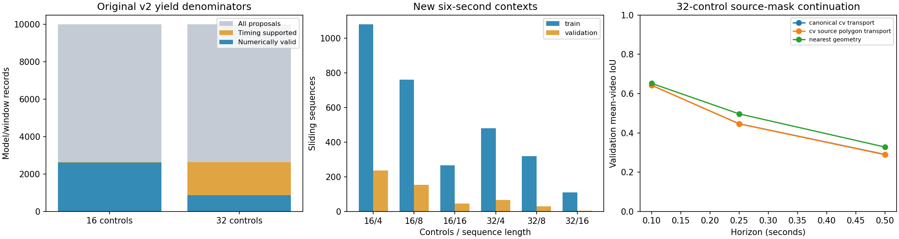

Track 1 remains open development; Track 2 is on hold. Frozen baselines are preserved.
The 19,974 model/window attempts represent 9,987 source opportunities, not distinct clips. Source-derived timing eligibility is not independently preregistered coverage.
The six-second supplement is targeted, not a random dataset sample. Parameters and appearance PCA are locked from v2; this is a coverage extension, not a new hyperparameter search.
Sequence counts are overlapping windows, not independent annotated episodes. No sequence may bridge a missing hop or source/correspondence epoch.
Transport preserves the certified anchor curve under a separate positive similarity pose. It does not certify future physical geometry, identity, covariance or raster topology.
Canonical transport and source-polygon CV use the identical motion estimator. Neither is a new learned dynamics model. Source observations are retrospective, so this is not online RGB forecasting.
Longer context covariance calibration is pending. Independent motion/contact/identity references and genuinely fresh locked evaluation remain absent.

| model | proposed | timing_supported | valid | valid_per_timing | epoch_failures |
|---|---|---|---|---|---|
| 16 | 9987 | 2633 | 2608 | 99.05% | 0 |
| 32 | 9987 | 2633 | 877 | 33.31% | 1749 |
| model | scope | source_position_marginal95_coverage | split |
|---|---|---|---|
| 16 | empirical source-position marginals; not joint or independent human uncertainty | 0.955783639143731 | train |
| 32 | empirical source-position marginals; not joint or independent human uncertainty | 0.9558912037037037 | train |
| 16 | empirical source-position marginals; not joint or independent human uncertainty | 0.9392995731470702 | validation |
| 32 | empirical source-position marginals; not joint or independent human uncertainty | 0.936505681818182 | validation |
| attempts | complete_certified | model | split | valid | video_id |
|---|---|---|---|---|---|
| 651 | 136 | 16 | train | 295 | P02_122 |
| 651 | 146 | 32 | train | 154 | P02_122 |
| 1162 | 142 | 16 | train | 356 | P03_112 |
| 1162 | 153 | 32 | train | 155 | P03_112 |
| 1411 | 174 | 16 | train | 266 | P04_109 |
| 1411 | 178 | 32 | train | 183 | P04_109 |
| 680 | 57 | 16 | train | 183 | P11_16 |
| 680 | 65 | 32 | train | 66 | P11_16 |
| 732 | 125 | 16 | train | 260 | P22_117 |
| 732 | 134 | 32 | train | 136 | P22_117 |
| 880 | 63 | 16 | validation | 195 | P08_09 |
| 880 | 72 | 32 | validation | 74 | P08_09 |
| 420 | 34 | 16 | validation | 117 | P18_03 |
| 420 | 44 | 32 | validation | 46 | P18_03 |
| model | split | length | sequences | complete_certified_sequences |
|---|---|---|---|---|
| 16 | train | 4 | 1081 | 436 |
| 16 | train | 8 | 762 | 284 |
| 16 | train | 16 | 266 | 84 |
| 16 | validation | 4 | 236 | 50 |
| 16 | validation | 8 | 153 | 19 |
| 16 | validation | 16 | 46 | 0 |
| 32 | train | 4 | 480 | 460 |
| 32 | train | 8 | 320 | 303 |
| 32 | train | 16 | 110 | 99 |
| 32 | validation | 4 | 67 | 60 |
| 32 | validation | 8 | 29 | 28 |
| 32 | validation | 16 | 5 | 5 |
| model | horizon | method | queries | mean_video_iou | mean_video_position_rmse_px |
|---|---|---|---|---|---|
| 16 | 0.1 | canonical_cv_transport | 58 | 0.6515 | 106.18 |
| 16 | 0.1 | cv_source_polygon_transport | 58 | 0.6518 | 106.18 |
| 16 | 0.1 | nearest_geometry | 58 | 0.6425 | 50.98 |
| 16 | 0.25 | canonical_cv_transport | 42 | 0.4422 | 293.3 |
| 16 | 0.25 | cv_source_polygon_transport | 42 | 0.4413 | 293.3 |
| 16 | 0.25 | nearest_geometry | 42 | 0.4631 | 124.58 |
| 16 | 0.5 | canonical_cv_transport | 29 | 0.3156 | 296.09 |
| 16 | 0.5 | cv_source_polygon_transport | 29 | 0.314 | 296.09 |
| 16 | 0.5 | nearest_geometry | 29 | 0.2937 | 258.94 |
| 32 | 0.1 | canonical_cv_transport | 81 | 0.6424 | 107.64 |
| 32 | 0.1 | cv_source_polygon_transport | 81 | 0.6424 | 107.64 |
| 32 | 0.1 | nearest_geometry | 81 | 0.6521 | 73.04 |
| 32 | 0.25 | canonical_cv_transport | 65 | 0.4466 | 250.39 |
| 32 | 0.25 | cv_source_polygon_transport | 65 | 0.446 | 250.39 |
| 32 | 0.25 | nearest_geometry | 65 | 0.4969 | 132.63 |
| 32 | 0.5 | canonical_cv_transport | 44 | 0.2904 | 303.64 |
| 32 | 0.5 | cv_source_polygon_transport | 44 | 0.2891 | 303.64 |
| 32 | 0.5 | nearest_geometry | 44 | 0.3281 | 271.67 |
The separate all-five-method matched cohort remains in transport.json. Longer-horizon CV position can be worse than nearest or linear; no universal improvement is claimed.
loss_audit.json · attempt_loss.parquet · context_results.json · context_continuity.parquet · context_rgb_parity.json · capacity.json · transport.json · transport_support_matched.json · fresh_participant_reservation.json · independent_review/contract.json · baseline_integrity.json